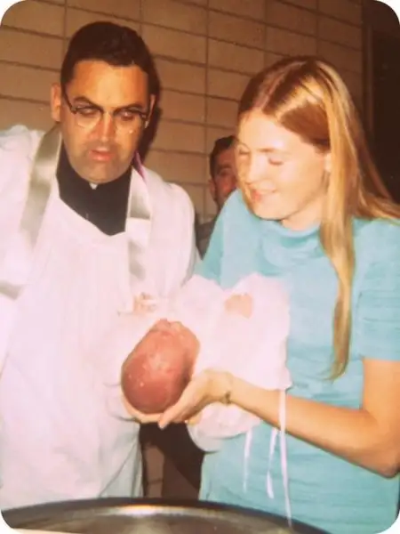

Recently, I read a reflection on infant baptism that made my heart dance. The reading took place, fittingly, just as we were celebrating the Baptism of our Lord.
The topic of baptism has intrigued, amazed and consoled me through the years. During my college days, when challenges to my Catholic faith came fast and furiously, one of the contentions tossed my way surrounded infant baptism. How can an infant know whether he or she wants to dedicate his or her life to Jesus Christ? Logically, this made sense to me, at least at first.
I wasn’t understanding what baptism is. It isn’t simply a profession of intention; something much deeper takes place. But it wouldn’t be until years later, when my own children were being baptized, that the topic would become real to me. I not only came to understand infant baptism, but fervently embrace it.
So much so that when we lost our third child in miscarriage, I was deeply troubled by knowing he hadn’t had a chance to be baptized, and was equally comforted learning, as our priest explained, that our child likely was baptized “by desire” — the desire we had in our hearts for him to be.
St. Augustine and others throughout Church history have commented on the possibility of baptism of desire. As mentioned here, in Augustine’s “De Baptismo,” he believes it possible, indicating that even the thief, though not baptized, was promised he’d be in paradise with our Lord. “Over and over,” he continues, “I find that not only suffering for the name of Christ can supply what was lacking of Baptism, but also faith and conversion of heart, if it happens that because of circumstances of time, recourse cannot be had to the celebration of the mystery of Baptism.”
If baptism hadn’t been deeply important to us, we wouldn’t have cared about whether our miscarried child, Gabriel, would have had this chance. But we wanted to know that our child whom we never held was being held by God.
The topic came into view again when our children were confirmed. Our bishop was one of the first to institute an earlier confirmation, at third grade, and our oldest son, Christian, was among the first group to be confirmed at this younger age. The more I learned about the reason for the age change, the more I appreciated the sacrament. I came to see that, as with baptism, the graces conferred during confirmation, though quite invisible, are very real, and forever binding.
If third-graders were now being confirmed, because a later confirmation could be seen as a deprivation of much-needed graces, the same could be applied to infant baptism, it seemed.
And now, every Easter, it hits me anew as those preparing to join the Church are baptized. When they experience these life-giving waters, I sense, if not see, that something really and truly divine is happening that will change the soul of the individual forever. It can’t be undone. It can be resisted and defiled, yes, but we can do nothing to erase the seal of God on our hearts.
And now here we are, just having celebrated our Lord’s Baptism in the Jordan by John the Baptist, and being reminded of God the Father’s proclamation (Mt 3:16-17): “After the Lord was baptized, the heavens were opened, and the Spirit descended upon him like a dove, and the voice of the Father thundered: This is my beloved Son, with whom I am well pleased.”
Scripture makes it clear: baptism is a big deal. If it was important enough for Jesus to do it, and we are his followers, it’s important enough for us, too.
Ronda Chervin, a convert from Judaism, wrote the reflection on the topic I mentioned at the start, which I discovered in January’s “Magnificat,” p. 120. She begins by affirming that “the purpose of baptism is not to provide the person with a conscious religious experience, but rather to open within him the door through which divine love can flow, to turn the soul toward God by implanting on it his first kiss, as it were.”
What an exquisite way of saying it: “…to turn the soul toward God by implanting on it his first kiss..”
Furthermore, she says, “to deny the child this expression of Christ’s self-giving, on the grounds that the infant is too young to choose freely, would be similar to withholding parental love until the child is at the age of reason.”
She says, “given the infinite gulf between the reality of divine love and even the adult’s ability to appreciate it, who shall set a time when the entering of Christ’s love into the soul would have its greatest efficacy?”
Here’s another question I’ve had. If baptism is simply knowing we want to be in a relationship with Christ and stating that in public, what of those who cannot talk? Who cannot form not only the words, but the thoughts that go with them? Are these denied this gift? Think of the mentally challenged, who could never receive instruction. Would God turn them away because they could not publicly proclaim their desire to be in relationship with the Lord? A resounding no, I say.
“By comparison with the love on God’s part, we are always half asleep,” Chervin continues. “Just as Christ has infinite love for this fresh individual uniquely conceived, so the Church, manifesting the divine love, rushes to bring the infant into contact with it by making him a member of the Mystical Body of the Church.”
This has to be the most powerful explanation of infant baptism I’ve ever heard. Catholics baptize infants because we want so much for them to be in contact with divine love. That simply cannot be a bad thing.

Now then, here I am on Sept. 12, 1968, being given this divine gift of baptism as a two-week old infant.
Did I know at the time how it would affect my life? Of course not. But do I believe that it has made a profound difference to me? Emphatically, yes! And so I look back on this day that I don’t remember at all, except for what I’ve been told and this photograph shows, with the utmost gratitude toward my parents for taking the initiative — arranging the date with the priest, finding that beautiful dress, and summoning my Aunt Anne, who stood in for another aunt, my godmother Colleen Guler, to be there to witness this life-giving moment, and with such tenderness and grace.
As I was preparing to write this, it occurred to me that my middle son’s baptism anniversary is coming up on Jan. 19. In fact, it will happen while we’re on the March for Life pilgrimage in Washington, D.C., with our Catholic high school, where he is a freshman. The March itself will actually cross directly with his special day. I don’t know if he’ll understand the significance, but you can bet, as I’m marching down Constitution Avenue with him, I’ll be pondering anew how “God works all things for the good, according to his purposes, for those who love him.” (Romans 8:28)
Q4U: Did you ever question infant baptism? Where are you at in your understanding of it now?